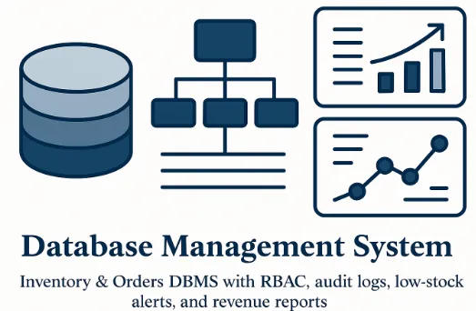

Demo case study
Sales forecasting & reporting
Reports and forecasts are difficult to compare.
Explore the solution ↗PORTFOLIO
Explore a built automation prototype alongside demo case studies and sample solution concepts.
These examples illustrate our approach. They are not presented as verified client engagements or measured client outcomes.
EXPLORE THE WORK
Reports and forecasts are difficult to compare.
Explore the solution ↗
Teams need to identify customers at risk of leaving.
Explore the solution ↗
Reviewing quarantined messages can interrupt daily work.
Explore the solution ↗
Orders, stock levels, and revenue need consistent records.
Explore the solution ↗Useful information is scattered across company documents.
Explore the solution ↗
Turn incoming emails into validated requests, organized documents, and reply drafts—with human review for exceptions.
Explore the case study ↗PROBLEM → SOLUTION → OUTCOME
Problem: Reports and forecasts are difficult to compare.
Solution: A forecasting pipeline and dashboard bring actuals and predictions together.
Demonstrated outcome / target: The demo provides a shared view of trends and forecast errors.
View details ↗Problem: Teams need to identify customers at risk of leaving.
Solution: A machine learning pipeline scores risk and highlights relevant features.
Demonstrated outcome / target: The demo helps prioritize investigation and retention outreach.
View details ↗Problem: Reviewing quarantined messages can interrupt daily work.
Solution: A digest and threat dashboard organize review and release workflows.
Demonstrated outcome / target: The demo centralizes review; production impact depends on the deployment.
View details ↗Problem: Orders, stock levels, and revenue need consistent records.
Solution: A relational database supports reporting and low-stock monitoring.
Demonstrated outcome / target: The demo gives teams structured inventory and order information.
View details ↗Problem: Useful information is scattered across company documents.
Solution: A proposed assistant retrieves relevant passages and links answers to sources.
Demonstrated outcome / target: Illustrative solution: faster information access is a target to measure in a pilot.
View details ↗Problem: Teams manually interpret emails, look up business references, and organize attachments.
Solution: A built prototype combines AI extraction, Dataverse validation, request creation, SharePoint storage, and Teams notifications.
Demonstrated capability: Valid requests are assigned; invalid references trigger human review. Reply drafts remain under employee control.
View the case study ↗We establish a baseline and measure time saved, reporting speed, data quality, or error rates during a scoped pilot. No unverified reduction figures are claimed here.
LET’S BUILD